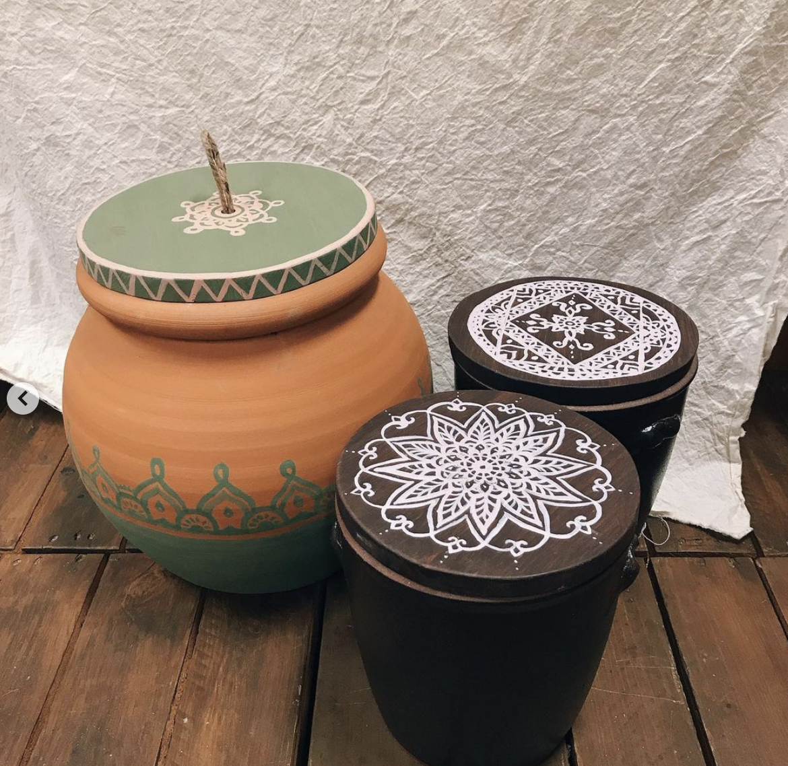

다양한 퇴비함
퇴비함은 토기화분, 스티로폼, 양철통, 플라스틱통 등 다양한 형태로 만들 수 있어요. 토기는 이미 숨을 쉬기 때문에 따로 구멍을 뚫을 필요가 없어요. 위에 덮을 천이나 뚜껑이 있으면 충분합니다. 스티로폼은 꼭 맞는 뚜껑을 찾기 쉽습니다. 위에 공기가 통하게 구멍을 뚫고 양파망으로 벌레가 꼬이지 않게 고정해줍니다. 양철통도 윗부분에 구멍을 뚫어주시면 사용할 수 있어요. 이 외에도 흙과 물에 썩지 않는 재료라면 사용할 수 있습니다. 퇴비를 섞을 주걱도 페트병 등으로 업사이클링할 수 있어요! 업사이클링한 퇴비함과 주걱을 사진을 찍어 자랑해주세요! #반려균, #퇴비함_일기 (이메일 제보 받아요. kimyj18h@pati.kr)
